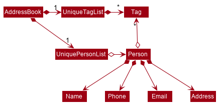

By: Team AY1920S1-CS2103T-W13-2 Since: September 2019 Licence: MIT
- 1. Introduction
- 2. Setting up
- 3. Design
- 4. Implementation
- 5. Documentation
- 6. Testing
- 7. Dev Ops
- Appendix A: Product Scope
- Appendix B: User Stories
- Appendix C: Use Cases
- Appendix D: Non Functional Requirements
- Appendix E: Glossary
- Appendix F: Product Survey
- Appendix G: Instructions for Manual Testing
1. Introduction
Njoy is a teacher assistant designed to manage teacher’s daily tasks such as generating quizzes, managing classes and viewing grades reports.
This documentation serves as an introduction to the architecture and implementation of Njoy, and is made for developers who wish to maintain, modify or understand the software development behind our application. We adopted the top-down approach; we will first look into high-level architectures before exploring implementation details of each feature.
We encourage you to traverse the full path from the high level design to the implementation details of the feature you are interested for the most complete understanding.
2. Setting up
Refer to the guide here.
3. Design
3.1. Architecture

The Architecture Diagram given above explains the high-level design of Njoy. Given below is a quick overview of each component.
The .puml files used to create diagrams in this document can be found in the diagrams folder.
Refer to the Using PlantUML guide to learn how to create and edit diagrams.
|
-
At app launch: Initializes the components in the correct sequence, and connects them up with each other.
-
At shut down: Shuts down the components and invokes cleanup method where necessary.
Commons represents a collection of classes used by multiple other components.
The following class plays an important role at the architecture level:
-
LogsCenter: Used by many classes to write log messages to the App’s log file.
The rest of the App consists of four components.
Each of the four components
-
Defines its API in an
interfacewith the same name as the Component. -
Exposes its functionality using a
{Component Name}Managerclass.
For example, the Logic component (see the class diagram given below) defines it’s API in the Logic.java interface and exposes its functionality using the LogicManager.java class.
How the architecture components interact with each other
The Sequence Diagram below shows how the components interact with each other for the scenario where the user issues the command delete 1.
delete 1 commandThe sections below give more details of each component.
3.2. UI component
API : Ui.java
The UI consists of a MainWindow that is made up of parts e.g.CommandBox, ResultDisplay, PersonListPanel, StatusBarFooter etc. All these, including the MainWindow, inherit from the abstract UiPart class.
The UI component uses JavaFx UI framework. The layout of these UI parts are defined in matching .fxml files that are in the src/main/resources/view folder. For example, the layout of the MainWindow is specified in MainWindow.fxml
The UI component,
-
Executes user commands using the
Logiccomponent. -
Listens for changes to
Modeldata so that the UI can be updated with the modified data.
3.3. Logic component
API :
Logic.java
-
Logicuses theAddressBookParserclass to parse the user command. -
This results in a
Commandobject which is executed by theLogicManager. -
The command execution can affect the
Model(e.g. adding a person). -
The result of the command execution is encapsulated as a
CommandResultobject which is passed back to theUi. -
In addition, the
CommandResultobject can also instruct theUito perform certain actions, such as displaying help to the user.
Given below is the Sequence Diagram for interactions within the Logic component for the execute("delete 1") API call.
delete 1 Command
The lifeline for DeleteCommandParser should end at the destroy marker (X) but due to a limitation of PlantUML, the lifeline reaches the end of diagram.
|
3.4. Model component
API : Model.java
The Model,
-
stores a
UserPrefobject that represents the user’s preferences. -
stores the Address Book data.
-
exposes an unmodifiable
ObservableList<Person>that can be 'observed' e.g. the UI can be bound to this list so that the UI automatically updates when the data in the list change. -
does not depend on any of the other three components.
As a more OOP model, we can store a Tag list in Address Book, which Person can reference. This would allow Address Book to only require one Tag object per unique Tag, instead of each Person needing their own Tag object. An example of how such a model may look like is given below. |
3.5. Storage component
API : Storage.java
The Storage component,
-
can save
UserPrefobjects in json format and read it back. -
can save the Address Book data in json format and read it back.
3.6. Common classes
Classes used by multiple components are in the seedu.addressbook.commons package.
4. Implementation
This section describes some noteworthy details on how certain features are implemented.
4.1. Question feature
The question feature utilises the QuestionCommandParser class to parse the user command input into the different
command types and validates the input. There are two types of questions OpenEndedQuestion and McqQuestion which
extends the Question class. Questions are then added into the QuestionBank#questions observable list.
The feature comprises of five commands namely,
-
QuestionAddCommand- Adding questions -
QuestionEditCommand- Editing questions -
QuestionDeleteCommand- Deleting questions -
QuestionListCommand- Listing questions -
QuestionSlideshowCommand- Starting a slideshow (See slideshow feature)
The commands when executed, will interface with the methods exposed by the Model interface to perform the related operations
(See logic component for the general overview).
To Add: Class diagram of the interaction between the question parser and commands
4.1.1. Add command
The following is a detailed explanation of the operations QuestionAddCommand performs.
Step 1. The QuestionAddCommand#execute(Model model) method is executed and it validates type of question defined.
The type defined will dictate if the resulting question will be a OpenEndedQuestion or McqQuestion question type.
Step 2. The method Model#addQuestion(Question question) will then be called to add the question and a success message will
be generated by the QuestionAddCommand#generateSuccessMessage(Question question) method and a new CommandResult will be
returned with the generated success message.
4.1.2. Edit command
The following is a detailed explanation of the operations QuestionEditCommand performs.
Step 1. The QuestionEditCommand#execute(Model model) method is executed and it checks if the Index defined when
instantiating QuestionEditCommand(Index index, HashMap<String, String> fields) is valid.
Since it is optional for the users to input fields, the fields not entered will reuse the existing value currently defined in
the Question object.
| If the question type is changed from open ended to mcq, it is necessary for the user to defined all four options i.e a/ b/ c/ d/. |
Step 2. A new Question with the updated values will be created and replace the existing question object
through the Model#setQuestion(Index index, Question question) method at the specified Index defined by the user.
Step 3. A success message will be generated by the QuestionAddCommand#generateSuccessMessage(Question question) method
and a new CommandResult will be returned with the generated success message.
4.1.3. Delete command
The following is a detailed explanation of the operations QuestionDeleteCommand performs.
Step 1. The QuestionDeleteCommand#execute(Model model) method is executed and it checks if the Index defined when
instantiating QuestionDeleteCommand(Index index, HashMap<String, String> fields) is valid.
Step 2. The Question at the specified Index is then removed from the QuestionBank#questions observable list through
the Model#deleteQuestion(Index index) method.
Step 3. A success message will be generated by the QuestionAddCommand#generateSuccessMessage(Question question) method
and a new CommandResult will be returned with the generated success message.
4.1.4. List command
The following is a detailed explanation of the operations QuestionListCommand performs.
Step 1. The QuestionListCommand#execute(Model model) method is executed. No validation is necessary here since it
does not write to the question list.
Step 2. The Model#getQuestionsSummary() method is then called and the questions are returned as a String to the new CommandResult
object.
4.1.5. Design Considerations
Command Syntax
-
Current Implementation:
-
Current implementation of the commands follows the command word syntax e.g question followed by the arguments necessary to execute the add, edit, delete, list and slideshow command.
-
-
Alternatives Considered:
-
Usage of a forward slash
/and then the command word. Although it makes it clearer that the input is a command, we realised it is redundant as the only input will be commands and will make it more tedious for the user.
-
Command Length
-
Current Implementation:
-
Commands are currently shortened as much as possible through the use of initials without much loss in clarity. For example, instead of using optionA/ to denote the first option, we use a/ instead. Although this may be unfamiliar to the user initially, it should be easy to pick up and will make it less tedious during input.
-
-
Alternatives Considered:
-
Using more descriptive terms as arguments such that each argument will be specified clearly. However, this decreases the user experience as the command will be too long.
-
4.2. Slideshow feature
The slideshow feature is dependent on the questions added by the question slideshow [question no(s).] command and
interacts with the ModelManager to retrieve the list of questions to be displayed in the slideshow.
The logic control for displaying the ui resides in the SlideshowWindow class and handles the controls and instantiation
of the various QuestionPanel that contains each question.
Below is the sequence diagram of the interactions that happen from when the slideshow command is entered, to the corresponding questions displayed in the slideshow.

The following is an example and detailed explanation as to how the questions are fetched and displayed on the slideshow.
Step 1. The user requests to start a slideshow with a selection of questions using the question slideshow [question no(s).] command.
This will add questions based on the Index specified and will be added to the slideshowQuestions list under the SavedQuestions class.
The usage of Index here is such that it follows the same convention of when the user edits or deletes a question.
| The order of the questions displayed on the slideshow will be based on the input order. |
Step 2. The command is executed and the MainWindow calls CommandResult#isShowSlideshow() to verify if the command specified
is to start a slideshow. The SlideshowWindow is then displayed through the SlideshowWindow#slideShowWindow.show().
| The slideshow window has already been instantiated on application launch and the window is merely being hidden or shown. |
Step 3. The window is now visible and existing questions are cleared. The list of slideshow questions is then fetched through
Logic#getSlideshowQuestions() which in turn calls the ModelManager#getSlideshowQuestions() that fetches
the slideshowQuestions list in SavedQuestions.
Step 4. The user will then navigate and control the slideshow using the Left/Right, Space and Esc key as defined by the key
listeners in SlideshowWindow#initialiseKeyboardControls(Stage root).
Step 5. The user exits the slideshow when the Esc key event is triggered or when the currQuestionIndex exceeds the questionPanels.size() or
it falls below 0. The behaviour of this follows the common procedure that most presentation programs adopt thus, it will not
feel foreign to users.

Activity diagram of the actions performed
4.2.1. Design Considerations
Controls
-
Current Implementation:
-
The choice of using the arrow keys for navigation and the
Escapekey to quit the slideshow is such that it will feel familiar to users who uses presentation programs often as they have similar controls. The only difference will be the usage of theSpacekey to show answers as it will be something new to the users and is unique to Njoy.
-
-
Alternatives Considered:
-
Usage of the
Akey to show answers. However, this is not very feasible as it is easily forgotten and not as user-friendly due to the smaller surface of the key as compared to theSpacekey.
-
Display
-
Current Implementation:
-
The ordering of the questions is defined based on the user input so it gives flexibility to the user to choose the ordering that they want the questions to be displayed.
-
Placement of the question numbering, topic, options and answer follows the common convention where the question numbering will be at the top followed by the topic, options and then the answer. This is such that viewers will not be confused by the layout.
-
Font sizes are displayed in the following descending order to allow the text for easy viewing:
-
Question Number
-
Question Topic & Options
-
Answer
-
-
-
Alternatives Considered:
-
Having a separate answer format for MCQ such that it will have an arrow beside the correct option e.g A) 1965 < (Answer). However, this is not feasible as it will break the standard formatting of the answers display since both Open Ended and MCQ questions will have 2 different answer formats and may cause confusion to the user.
-
4.3. Quiz feature
The quiz feature utilises the questions implemented and stored in the QuestionBank#questions observable list. The quiz feature utilises the QuizCommandParser class to parse the user command input into the different command types and validates the input. Quizzes are then added into the QuizBank#quizzes observable list. The quiz feature also relies heavily on the QuizManager class for handling commands from QuizCommand#execute. This is done to hide the implementation logic from the ModelManager class.
The feature comprises of five commands namely,
-
QuizCreateManuallyCommand- Creates a quiz with user input manually -
QuizCreateAutomaticallyCommand- Creates a quiz automatically -
QuizAddQuestionCommand- Adds a question to an existing quiz -
QuizRemoveQuestionCommand- Removes a question from an existing quiz -
QuizGetQuestionsAndAnswersCommand- Listing questions and answers of an existing quiz
The commands when executed, will interface with the methods exposed by the Model interface to perform the related operations
(See logic component for the general overview).
4.3.1. Create Manually command
The following is a detailed explanation of the operations QuizCreateManuallyCommand performs.
Step 1. The QuizCreateManuallyCommand#execute(Model model) method is executed and it validates the quizId, making sure that there is no existing quiz with the same quizId. Then, it validates the question numbers, making sure that all question numbers currently exist within the QuestionBank#questions observable list.
Step 2. The method Model#createQuizManually(String quizId, ArrayList<Integer> questionNumbers) will then be called to create the quiz with the specified questions. This calls the method SavedQuizzes#createQuizManually(String quizId, ArrayList<Integer> questionNumbers, SavedQuestions savedQuestions) which calls the method QuizManager#createQuizManually(String quizId, ArrayList<Integer> questionNumbers, SavedQuestions savedQuestions, QuizBank quizBank). This creates a Quiz class instance with the given quizId and iterates through the QuestionBank#questions to obtain the questions that the user has specified. Lastly, it adds this new Quiz instance to the QuizBank#quizzes for storage.
Step 3. Then, asuccess message will be generated by the QuizCreateManuallyCommand#generateSuccessMessage() method and a new CommandResult will be returned with the generated success message.
4.3.2. Create Automatically command
The following is a detailed explanation of the operations QuizCreateAutomaticallyCommand performs.
Step 1. The QuizCreateAutomaticallyCommand#execute(Model model) method is executed and it validates the quizId, making sure that there is no existing quiz with the same quizId.
Step 2. The method Model#createQuizAutomatically(String quizId, int numQuestions, String type) will then be called to create the quiz with the specified number of questions. This calls the method SavedQuizzes#createQuizAutomatically(String quizId, int numQuestions, String type, SavedQuestions savedQuestions) which calls the method QuizManager#createQuizAutomatically(String quizId, int numQuestions, String type, SavedQuestions savedQuestions, QuizBank quizBank). This creates a Quiz class instance with the given quizId and iterates through the QuestionBank#questions to obtain random questions to add to the quiz. The method ensures that no duplicate questions are added to the quiz, and continues adding questions to the quiz until the correct number of questions have been added. Lastly, it adds this new Quiz instance to the QuizBank#quizzes for storage.
Step 3. Then, a success message will be generated by the QuizCreateAutomaticallyCommand#generateSuccessMessage() method and a new CommandResult will be returned with the generated success message.
4.3.3. Add Question command
The following is a detailed explanation of the operations QuizAddQuestionCommand performs.
Step 1. The QuizAddQuestionCommand#execute(Model model) method is executed and it validates the question number, making sure that the question number currently exists within the QuestionBank#questions observable list.
Step 2. The method Model#addQuizQuestion(String quizId, int questionNumber, int quizQuestionNumber) will then be called to add the specified question to the specified quiz. This calls the method SavedQuizzes#addQuizQuestion(String quizId, int questionNumber, int quizQuestionNumber, SavedQuestions savedQuestions) which calls the method QuizManager#addQuizQuestion(String quizId, int questionNumber, int quizQuestionNumber, SavedQuestions savedQuestions, QuizBank quizBank). This obtains the question specified by the user, then adds it to the quiz specified by the quizId. This is done by searching through the QuizBank#quizzes for a quiz matching the quizId. Then, it calls the method Quiz#addQuestion(Question question, int questionIndex) which adds the question to the appropriate index.
Step 3. Then, a success message will be generated by the QuizAddQuestionCommand#generateSuccessMessage() method and a new CommandResult will be returned with the generated success message.
4.3.4. Remove Question command
The following is a detailed explanation of the operations QuizRemoveQuestionCommand performs.
Step 1. The QuizRemoveQuestionCommand#execute(Model model) method is executed.
Step 2. The method Model#removeQuizQuestion(String quizId, int questionNumber) will then be called to remove a specified question from the specified quiz. This calls the method SavedQuizzes#removeQuizQuestion(String quizId, int questionNumber, SavedQuestions savedQuestions) which calls the method QuizManager#removeQuizQuestion(String quizId, int questionNumber, SavedQuestions savedQuestions, QuizBank quizBank). This obtains the quiz specified by searching through the QuizBank#quizzes for a quiz matching the quizId. Then, it calls the method Quiz#removeQuestion(int questionIndex) which removes the question from the specified question index.
Step 3. Then, a success message will be generated by the QuizRemoveQuestionCommand#generateSuccessMessage() method and a new CommandResult will be returned with the generated success message.
4.3.5. List command
The following is a detailed explanation of the operations QuizGetQuestionsAndAnswersCommand performs.
Step 1. The QuizGetQuestionsAndAnswersCommand#execute(Model model) method is executed.
Step 2. The method Model#getQuestionsAndAnswersCommand(String quizId) will then be called to obtain the questions and answers in String representation for a specified quizId. This calls the method SavedQuizzes#getQuestionsAndAnswersCommand(String quizId) which calls the method QuizManager#getQuestionsAndAnswersCommand(String quizId, QuizBank quizBank). This obtains the quiz specified by searching through the QuizBank#quizzes for a quiz matching the quizId. Then, it calls Quiz#getFormattedQuestions() and Quiz#getFormattedAnswers() before formatting them for output.
Step 3. Then, a success message will be generated by the QuizGetQuestionsAndAnswersCommand#generateSuccessMessage() method and a new CommandResult will be returned with the generated success message.
4.3.6. Design Considerations
Aspect: Command Syntax
-
Current Implementation:
-
To be done
-
-
Alternatives Considered:
-
To be done
-
Aspect: Command Length
-
Current Implementation:
-
To be done
-
-
Alternatives Considered:
-
To be done
-
4.4. Student feature
The student feature utilises the StudentCommandParser class to parse the user command input into the different
command types and validates the input. Students are then added into the UniqueStudentList#students observable list.
The feature comprises of five commands namely,
-
StudentAddCommand- Adding students to overall student list -
StudentEditCommand- Editing students -
StudentDeleteCommand- Deleting students -
StudentListCommand- Listing students
To Add: Class diagram of the interaction between the student parser and commands
4.4.1. Add command
The following is a detailed explanation of the operations StudentAddCommand performs.
Step 1. The StudentAddCommand#execute(Model model) method is executed and it validates the student defined.
Since student names are unique, if a duplicate student is input, and exception is thrown and the duplicate student is not added.
Step 2 If tags are present in the input, Tags are created and added to the Student in the
StudentCommandParser#addCommand(ArgumentMultimap argMultimap) method.
Step 3. The method Model#addStudent(Student student) will then be called to add the created student and a success message will
be generated by the StudentAddCommand#generateSuccessMessage(Student student) method and a new CommandResult will be
returned with the generated success message.
4.4.2. Edit command
The following is a detailed explanation of the operations StudentEditCommand performs.
Step 1. The StudentEditCommand#execute(Model model) method is executed and it checks if the Index defined when
instantiating StudentEditCommand(Index index, EditStudentDescriptor editStudentDescriptor) is valid. It uses the
StudentEditCommand.EditStudentDescriptor to create the new student.
Step 2. A new Student with the updated values will be created and replace the existing student object
through the Model#setStudent(studentToEdit, editedStudent) method.
Step 3 The filtered student list will be updated with the new student with the
model#updateFilteredStudentList(PREDICATE_SHOW_ALL_STUDENTS) method.
Step 4. A success message will be generated by the
StudentEditCommand#generateSuccessMessage(Student studentToEdit, Student editedStudent) method
and a new CommandResult will be returned with the generated success message.
4.4.3. Delete command
The following is a detailed explanation of the operations StudentDeleteCommand performs.
Step 1. The StudentDeleteCommand#execute(Model model) method is executed and it checks if the Index defined when
instantiating StudentDeleteCommand(Index index) is valid (IE: Not out of bounds of student list)
Step 2. The Student at the specified Index is then removed from the UniqueStudentList#students observable list through
the Model#deleteStudent(Index index) method.
Step 3. A success message will be generated by the StudentDeleteCommand#generateSuccessMessage(Student student) method
and a new CommandResult will be returned with the generated success message.
4.4.4. List command
The following is a detailed explanation of the operations StudentListCommand performs.
Step 1. The StudentListCommand#execute(Model model) method is executed. No validation is necessary here since it
does not write to the student list.
Step 2. The Model#getStudentSummary() method is then called and the questions are returned as a String to the new CommandResult
object.
Step 3. If any view other than the view of the student list is showing on the MainWindow, the 'MainWindow#handleStudent() method
is called and the student list is now visible on the Main Window.
| In this implementation of the application, the list of students is rendered on the GUI of the main window. Hence, the command merely prints its contents on the Command Result box. |
Command Syntax
-
Current Implementation:
-
Current implementation of the commands follows the command word syntax e.g student followed by the arguments necessary to execute the add, edit, delete, list and slideshow command.
-
-
Alternatives Considered:
-
Usage of a forward slash
/and then the command word. Although it makes it clearer that the input is a command, we realised it is redundant as the only input will be commands and will make it more tedious for the user.
-
Command Length
-
Current Implementation:
-
Commands are currently shortened as much as possible through the use of initials without much loss in clarity. For example, when denoting the index number of the student to delete in
StudentDeleteCommand, we use index/ instead of studentIndexNumber/.
-
-
Alternatives Considered:
-
Using more descriptive terms as arguments such that each argument will be specified clearly. However, this decreases the user experience as the command will be too long.
-
4.5. Tag feature
The tag command was included in nJoyAssistant to help teachers identify the weak subjects of
their students easily.
The tag feature utilises the TagCommandParser class to parse and validate the
user input. Tags are then added into the Student that was specified by the Index
in the input.
The feature comprises of one command namely,
-
TagCommand- Tagging student specified by index number
The command when executed, will interface with the methods exposed by the Model interface to perform the related operations
(See logic component for the general overview).
To Add: Class diagram of the interaction between the tag parser and command
4.5.1. Tag command
The following is a detailed explanation of the operations TagCommand performs.
Step 1. The TagCommand#execute(Model model) method is executed and it validates the tag(s) defined.
Since tags attached to a 'Student' are unique, if duplicate tags are added to a 'Student', an error message
is shown.
| If more than one tag is to be added, do tag/TAG_ONE tag/TAG_TWO. Full example: "tag index/1 tag/Chemistry tag/Physics" |
Step 2. The method TagCommand#createTaggedStudent(Student studentToTag,Set<Tag> tagSet) will then be called
to create a new student with the updated tags, and the method model#setStudentWithIndex(Index actualIndex, Student updatedStudent) will
update the existing student with the new student(with the tags)
Step 3. A success message will be generated by the
TagCommand#generateSuccessMessage(String taggedStudentNotification, String existedTagsNotification) method
and a new CommandResult will be returned with the generated success message.
Command Syntax
-
Current Implementation:
-
Current implementation of the commands follows the command word syntax e.g tag followed by the arguments necessary to execute the tag command.
-
-
Alternatives Considered:
-
Usage of a forward slash
/and then the command word. Although it makes it clearer that the input is a command, we realised it is redundant as the only input will be commands and will make it more tedious for the user.
-
Command Clarity
-
Current Implementation:
-
"tag index/1 tag/Chemistry tag/Physics"
-
We currently have a tag/ before each tag that is to be added to the student at the specified index number. Although this might be slightly lengthier, it is clearer that we are adding two separate tags as opposed to one tag with a space in between.
-
-
Alternatives Considered:
-
"tag index/1 tag/Chemistry Physics"
-
Using just one tag/ before inserting all the tags to be added to the particular student may result in a wrong tag with more than one word being added.
-
4.6. Mark feature
The mark feature is included in nJoyAssistant to help teachers identify the students who are in dire need of
academic help due to poor overall results.
The tag feature utilises the MarkCommandParser class to parse and validate the
user input.
The feature comprises of two commands namely,
-
AddMarkCommand- Marking student specified by index number -
RemoveMarkCommand- Unmarking student specified by index number
The command when executed, will interface with the methods exposed by the Model interface to perform the related operations
(See logic component for the general overview).
To Add: Class diagram of the interaction between the tag parser and command
4.6.1. Add Mark command
The following is a detailed explanation of the operations AddMarkCommand performs.
Step 1. The AddMarkCommand#execute(Model model) method is executed and it validates the Index derived from the input.
| Index cannot be out of bounds of the student list, and cannot attempt to mark a student that has already been marked. |
Step 2. The method Student#setMarked() will then be called to mark the Student with the specified Index
Step 3. A success message will be generated by the
AddMarkCommand#generateSuccessMessage(String MESSAGE_SUCCESS, int index) method
and a new CommandResult will be returned with the generated success message.
4.6.2. Remove Mark command
The following is a detailed explanation of the operations RemoveMarkCommand performs.
Step 1. The RemoveMarkCommand#execute(Model model) method is executed and it validates the Index derived from the input.
| Index cannot be out of bounds of the student list, and cannot attempt to unmark a student that has not already been marked. |
Step 2. The method Student#setUnmarked() will then be called to mark the Student with the specified Index
Step 3. A success message will be generated by the
RemoveMarkCommand#generateSuccessMessage(String MESSAGE_SUCCESS, int index) method
and a new CommandResult will be returned with the generated success message.
==== Design Considerations
Command Syntax
-
Current Implementation:
-
Current implementation of the commands follows the command word syntax e.g tag followed by the arguments necessary to execute the tag command.
-
-
Alternatives Considered:
-
Usage of a forward slash
/and then the command word. Although it makes it clearer that the input is a command, we realised it is redundant as the only input will be commands and will make it more tedious for the user.
-
4.7. Group feature
The group feature utilises the students stored in the UniqueStudentList#students observable list.
The group feature utilises the GroupCommandParser class to parse the user command input into the different command types and validates the input.
The feature comprises of four commands namely,
-
GroupCreateManuallyCommand- Creates a group with user input manually -
GroupAddStudentCommand- Adds a student to an existing group -
GroupRemoveStudentCommand- Removes a student from an existing group -
GroupGetStudentsCommand- Listing students of an existing group
The commands when executed, will interface with the methods exposed by the Model interface to perform the related operations
(See logic component for the general overview).
4.7.1. Create Manually command
The following is a detailed explanation of the operations GroupCreateManuallyCommand performs.
Step 1. The GroupCreateManuallyCommand#execute(Model model) method is executed and it validates the groupId, making sure that there is no existing group with the same groupId. Then, it validates the student numbers, making sure that all student numbers currently exist within the UniqueStudentList#students observable list.
Step 2. The method Model#createGroupManually(String groupId, ArrayList<Integer> studentNumbers) will then be called to create the group with the specified students.
Step 3. Then, a success message will be generated by the GroupCreateManuallyCommand#generateSuccessMessage() method and a new CommandResult will be returned with the generated success message.
4.7.2. Add Student command
The following is a detailed explanation of the operations GroupAddStudentCommand performs.
Step 1. The GroupAddStudentCommand#execute(Model model) method is executed and it validates the student number, making sure that the student number currently exists within the UniqueStudentList#students observable list.
Step 2. The method Model#addStudentToGroup(String groupId, int studentNumber, int groupIndexNumber) will then be called to add the specified student to the specified group, with the specified group index number.
Step 3. Then, a success message will be generated by the GroupAddStudentCommand#generateSuccessMessage() method and a new CommandResult will be returned with the generated success message.
4.7.3. Remove Student command
The following is a detailed explanation of the operations GroupRemoveStudentCommand performs.
Step 1. The GroupRemoveStudentCommand#execute(Model model) method is executed.
Step 2. The method Model#removeStudentFromGroup(String groupId, int studentNumber) will then be called to remove a specified student from the specified group.
Step 3. Then, a success message will be generated by the GroupRemoveStudentCommand#generateSuccessMessage() method and a new CommandResult will be returned with the generated success message.
4.7.4. List(Show) command
The following is a detailed explanation of the operations GroupGetStudentsCommand performs.
Step 1. The GroupGetStudentsCommand#execute(Model model) method is executed.
Step 2. The method ListOfGroups#setCurrentlyQueriedGroup(String groupId) will then be called to set the currently queried group to match the one that the user input, and CommandResultType is set to SHOW_GROUP
Step 3. The method MainWindow#handleGroup() is then called, opening a new window to show the queried group and the relevant students.
Step 3. Then, a success message will be generated by the GroupGetStudents#generateSuccessMessage() method and a new CommandResult will be returned with the generated success message.
| In this implementation of the application, the groups and respective students are rendered on the GUI of the new window. Hence, the command merely prints its contents on the Command Result box. |
4.7.5. Design Considerations
Command Syntax
-
Current Implementation:
-
Current implementation of the commands follows the command word syntax e.g group followed by the minimum arguments necessary to execute the tag command.
-
-
Alternatives Considered:
-
Usage of a forward slash
/and then the command word. Although it makes it clearer that the input is a command, we realised it is redundant as the only input will be commands and will make it more tedious for the user.
-
Aspect: Command Length
-
Current Implementation:
-
Commands are currently shortened as much as possible without much loss in clarity. For example, instead of using showStudentsInGroup/ , we just ask users to provide groupId/[GROUP_ID] to show a list of students in that group. Although this may be unfamiliar to the user initially, it should be easy to pick up and will make it less tedious during input.
-
-
Alternatives Considered:
-
Using more descriptive terms as arguments such that each argument will be specified clearly. However, this decreases the user experience as the command will be too long.
-
4.8. Notes feature
The notes feature acts as a lightweight,digital “Post-It” for teachers.
The feature comprises of four commands namely,
-
NoteAddCommand- Creates a note with a description. -
NoteEditCommand- Edits an existing note. -
NoteDeleteCommand- Deletes an existing note. -
NoteListCommand-Lists all notes.
The commands when executed, will interface with the methods exposed by the Model interface to perform the related operations
(See logic component for the general overview).
4.8.1. Add Note Command
The following is a detailed explanation of the operations NoteAddCommand performs.
Step 1. The NoteAddCommand#execute(Model model) method is executed and it validates that the Note object passed from the parser using command input is valid.
Step 2. The method Model#addNote(Note note) will then be called to add the specified note to the NotesRecord. The Note added is validated for uniqueness by Note#isSameNote(Note note).
The ReadOnlyNotesRecord hides the implementation of the NotesRecord from the other layers of the software.
|
Step 3. If successful, a success message will be generated and a new CommandResult will be returned with the generated success message. Otherwise, an error message showing proper note command syntax is thrown as CommandException.
Step 4. If the command syntax was valid and Note was added to the NotesRecord, LogicManager calls Storage#saveNotesRecord(ReadOnlyNotesRecord notesRecord) which saves the NotesRecord in JSON format after serializing it using the JsonSerializableNotesRecord.
The following is a sample sequence diagram of the NoteAddCommand. Other commands under the notes feature follow a similar program flow; their diagrams have been omitted for brevity.
4.8.2. Edit Note Command
The following is a detailed explanation of the operations NoteEditCommand performs.
Step 1. The NoteEditCommand#execute(Model model) method is executed and it validates that the Note index is within range. It uses the NoteEditCommand.EditNoteDescriptor to create the new note.
Step 2. The method Model#setNote(Note noteToEdit, Note editedNote) will then be called to edit the note from the NotesRecord. The method NotesRecord#setNote(Note target, Note editedNote) validates that the edited note maintains the unique property of each note in its internal list using the comparison Note#isSameNote(Note note). If it is unique, the target note is edited to the new one.
Step 3. If successful, a success message will be generated by the and a new CommandResult will be returned with the generated success message. Otherwise, an error message showing proper note command syntax is thrown as CommandException.
Step 4. If the command syntax was valid and Note was edited from the NotesRecord, LogicManager calls Storage#saveNotesRecord(ReadOnlyNotesRecord notesRecord) which saves the edited notes in JSON format after serializing it using the JsonSerializableNotesRecord.
4.8.3. Delete note command
The following is a detailed explanation of the operations NoteDeleteCommand performs.
Step 1. The NoteDeleteCommand#execute(Model model) method is executed and it validates that the specified Note index to delete is within range. If valid, the note is retrieved using its index in the Model’s filtered notes list.
Step 2. The method Model#deleteNote(Note noteToDelete) will then be called to remove the note from the NotesRecord. NotesRecord#removeNote(Note note) is invoked which makes a call to its internal list to remove the speficied note.
Unlike the previous Note comparisons, removal of notes from the internal list uses Note#equals(Object other) comparison instead of the Note#isSameNote(Note otherNote).
|
Step 3. If successful, a success message will be generated by the and a new CommandResult will be returned with the generated success message. Otherwise, an error message showing proper note command syntax is thrown as CommandException.
Step 4. If the command syntax was valid and Note was removed from the NotesRecord, LogicManager calls Storage#saveNotesRecord(ReadOnlyNotesRecord notesRecord) which saves the new notes record in JSON format after serializing it using the JsonSerializableNotesRecord.
4.8.4. Note list command
| In this implementation of the application, the teacher’s notes are rendered on the GUI on loading the application. Hence, the list notes command merely prints its contents on the Command Result box. |
The following is a detailed explanation of the operations NoteListCommand performs.
Step 1. The NoteListCommand#execute(Model model) method is executed. It updates the notes list in Model. It retrieves the NotesRecord object of type ReadOnlyNotesRecord in the ModelManager to enumerate the list.
Step 2. The method NoteListCommand#generateSuccessMessage(ReadOnlyNotesRecord notesRecord) generates a String representation of the notes in the command.
Step 3. If successful, a success message will be generated by the and a new CommandResult will be returned with the generated success message. Otherwise, an error message showing proper note command syntax is thrown as CommandException.
Step 4. Success message enumerating the notes in the notes record is rendered in the command result box.
4.8.5. Design Considerations
Aspect: Command Length
-
Alternative 1 (current choice): Short, intuitive and minimal compulsory fields.
-
Pros: More flexible for the user, easier to use and very lightweight.
-
Cons: Not as powerful and less utility for advanced users.
-
-
Alternative 2: Many fields including tagging, redo, undo et cetera.
-
Pros: Powerful, many features that advanced users can use.
-
Cons: Against original target of making the Notes feature super lightweight and easy to use. Should be as easy as a digital Post-It!.
-
| Additional fields to the Note have been made optional such that it is very easy to use for beginner users and at the same time powerful for advanced ones. We aim to keep our notes feature as simple as a pen-paper recording or even simpler. |
4.9. Statistics feature
The slideshow feature allows users of Njoy to generate statistics reports using external files as input data.
Current File Compatibilities: Excel(.xlsx)
A generic data parser of external files is used to generate HashMap of student’s data as specified by the input file. This processed data is passed to a Statistics Model which performs statistical analysis before passing back to the UI for rendering.
The following is an example usage scenario where the Actor/User asks Njoy for a statistics report.
Step 1. Actor/User inputs a statistics command with data path as specified in user guide. MainWindow#executeCommand(String commandText) passes the user input to the LogicManager.
Step 2. The logic manager passes received input into its main parser which recognises this is a command for statistics. It passes the input to the StatisticsCommandParser for retrieving data from the external file. All data file parsers implements the ‘DataParser’ interface.
Step 3. Suppose the data was successfully retrieved, Statistics object is generated for data processing and passed into StatisticsAddCommand.
Step 4. Execution of this command results in the processed data being passed to the ModelManager using StatisticsAddCommand#execute.
Step 5. The success result of the Statistics command is shown on the GUI and the execution call has returned no MainWindow#executeCommand(String commandText). It
recognises the command was a valid Statistics command and opens window to show the processed data.
If the input file is not formatted as specified in the user guide, a ParseException would be thrown to show error message as the result. No new window is opened. The diagram below illustrates possible program control flows.
|
Aspect: Rendering UI
-
Alternative 1 (current choice): Opens a new window for the report generated.
-
Pros: More space to work with, able to generate more comprehensive report that is easier to view.
-
Cons: Data widgets are no longer stateful, they are newly created every time new report is requested.
-
-
Alternative 2: Render data for current state of the model on the original application.
-
Pros: Stateful, no need to recreate the widget every time there is new input data.
-
Cons: Lack of space, hard to render other UI elements such as the timetable.
-
Aspect: [Proposed] Storing of generated data reports.
-
[Proposed] Alternative 1 (preferred choice): Generate a pdf report every time user requests for the report.
-
Pros: Available for printing, portable.
-
Cons: Can be difficult to implement, need good understanding of API.
-
-
Alternative 2: Render a report from a stored library of reports when requested.
-
Pros: Easy to use, no need to input long file path every time.
-
Cons: User most likely have data stored in respective educational database system. Report generation is not computationally intensive and thus offers little performance advantage for effort.
-
4.10. Logging
We are using java.util.logging package for logging. The LogsCenter class is used to manage the logging levels and logging destinations.
-
The logging level can be controlled using the
logLevelsetting in the configuration file (See Section 4.11, “Configuration”) -
The
Loggerfor a class can be obtained usingLogsCenter.getLogger(Class)which will log messages according to the specified logging level -
Currently log messages are output through:
Consoleand to a.logfile.
Logging Levels
-
SEVERE: Critical problem detected which may possibly cause the termination of the application -
WARNING: Can continue, but with caution -
INFO: Information showing the noteworthy actions by the App -
FINE: Details that is not usually noteworthy but may be useful in debugging e.g. print the actual list instead of just its size
4.11. Configuration
Certain properties of the application can be controlled (e.g user prefs file location, logging level) through the configuration file (default: config.json).
5. Documentation
Refer to the guide here.
6. Testing
Refer to the guide here.
7. Dev Ops
Refer to the guide here.
Appendix A: Product Scope
Target user profile:
-
has a need to manage classes of students
-
prefer desktop apps over other types
-
can type fast
-
prefers typing over mouse input
-
is reasonably comfortable using CLI apps
-
has a need to create questions easily
-
has a need to generate quizzes with previously created questions
-
requires a timetable manager
-
prefers efficient viewing statistics of students rather than manually computing it
Value proposition: manage classes of students faster than a typical mouse/GUI driven app
Appendix B: User Stories
Priorities: High (must have) - * * *, Medium (nice to have) - * *, Low (unlikely to have) - *
| Priority | As a … | I want to … | So that I can… |
|---|---|---|---|
|
new user |
see usage instructions |
refer to instructions when I forget how to use the App |
|
teacher |
manage classes virtually |
have more time for other duties |
|
teacher |
add a student |
deal with possible changes |
|
teacher |
remove a student |
deal with possible changes |
|
teacher |
mark attendance |
ensure the student was present for class |
|
teacher |
record scores |
tally the marks accurately instead of manually inputting them into the system |
|
teacher |
write questions to a question bank |
store questions to be used later on |
|
teacher |
have the option to format the questions as either MCQ or Open Ended |
have different types of questions |
|
teacher |
generate quizzes with randomised questions for assignments |
students are unable to copy solutions from one another |
|
teacher |
the generated quizzes to be in a text document |
easily print and distribute them to students |
|
teacher |
find a student by name |
locate details of students without having to go through the entire list |
|
student |
view the teacher’s schedule |
request for consultations in appropriate slots |
|
student |
view my past results |
track my progress and check for updates |
|
student |
have an editable timetable |
view my timetable and request for consultations at appropriate slots when the teacher is free |
|
teacher |
have an editable timetable |
view my timetable and let students request for consultations at appropriate slots when I am free |
{More to be added}
Appendix C: Use Cases
(For all use cases below, the System is NJoy and the Actor is the Teacher, unless specified otherwise)
Use case: Add a student (UC01)
MSS
-
Teacher enter details of student
-
NJoy saves the record of the student
Use case ends.
Extensions
-
1a. Missing student details
-
1a1. NJoy shows error message.
Use case resumes at step 1.
-
Use case: Edit a student (UC02)
Preconditions
-
User exist in the system
MSS
-
Teacher finds a student (UC05)
-
Teacher requests to edit a student details
-
NJoy returns list of fields able to edit
-
Teacher enter the field to edit
-
NJoy save the edited record
Use case ends.
Extensions
-
*a. Teacher chooses to cancel the edit
Use case ends.
Use case: Delete a student (UC03)
Preconditions
-
User exist in the system
MSS
-
Teacher finds a student (UC05)
-
Teacher requests to delete a student
-
NJoy request for confirmation
-
Teacher confirms the deletion
-
NJoy deletes the student
Use case ends.
Extensions
-
3a. Teacher chooses not to delete the student
Use case ends.
Use case: Find a student (UC04)
MSS
-
Teacher enter name of student to find
-
NJoy display the student details
Use case ends.
Extensions
-
1a. Name of student cannot be found
-
1a1. NJoy shows error message
Use case resumes at step 1.
-
Use case: Create a class (UC05)
MSS
-
Teacher enter new class details
-
NJoy saves the new class
Use case ends.
Extensions
-
1a. Class name already taken
-
1a1. NJoy shows error message
Use case resumes at step 1.
-
Use case: Edit a class (UC06)
Preconditions
-
Class exist in the system
MSS
-
Teacher requests to edit class description
-
Teacher enters new class description
-
NJoy save the edited record
Use case ends.
Extensions
-
*a. Teacher chooses to cancel the edit
Use case ends.
Use case: Delete a class (UC07)
Preconditions
-
Class exist in the system
MSS
-
Teacher requests to delete a class
-
NJoy request for confirmation
-
Teacher confirms the deletion
-
NJoy deletes the class
Use case ends.
Extensions
-
2a. Teacher chooses not to delete the class
Use case ends.
Use case: Add student to class (UC08)
Preconditions
-
User exist in the system
-
Class exist in the system
MSS
-
Teacher requests to add a student to class
-
NJoy adds the student to the class
Use case ends.
Use case: Remove student from class (UC09)
Preconditions
-
User exist in the system
-
Class exist in the system
MSS
-
Teacher requests to remove a student from class
-
NJoy request for confirmation
-
Teacher confirms the deletion
-
NJoy remove the student from the class
Use case ends.
Extensions
-
2a. Teacher chooses not to remove the student from the class
Use case ends.
Use case: Schedule class time (UC10)
MSS
-
Teacher requests to add an item to the timetable
-
Teacher enter details of the item
-
NJoy save the item
Use case ends.
Extensions
-
2a. Missing item details
-
2a1. NJoy shows error message.
Use case resumes at step 2.
-
-
2b. Invalid class id
-
2b1. NJoy shows error message.
Use case resumes at step 2.
-
Use case: View timetable (UC11)
MSS
-
Teacher requests for the timetable
-
NJoy returns list of items in the timetable
Use case ends.
Extensions
-
2a. List is empty
Use case ends.
Use case: Delete item on timetable (UC12)
Preconditions
-
Item exist in timetable
MSS
-
Teacher list items in timetable (UC11)
-
Teacher request to delete item in timetable
-
NJoy request for confirmation
-
Teacher confirms the deletion
-
NJoy remove the item from the timetable
Use case ends.
Extensions
-
2a. Teacher chooses not to remove the item from the timetable
Use case ends.
Use case: Creating a mcq question (UC13)
MSS
-
Teacher enter topic and answers to the question
-
NJoy save the question
Use case ends.
Extensions
-
1a. Teacher did not enter answers
-
1a1. NJoy shows error message.
Use case resumes at step 1.
-
-
1b. Teacher did not enter topic
-
1b1. NJoy shows error message.
Use case resumes at step 1.
-
Appendix D: Non Functional Requirements
-
Should work on any mainstream OS as long as it has Java
11or above installed. -
Should be able to hold up to 1000 students without a noticeable sluggishness in performance for typical usage.
-
A user with above average typing speed for regular English text (i.e. not code, not system admin commands) should be able to accomplish most of the tasks faster using commands than using the mouse.
-
The system should work on both 32-bit and 64-bit environments
-
The assistant should never take more than 5 seconds to process any command
-
The assistant should be usable by any teacher from any academic background without much of a learning curve
-
The teacher should be able to have as many classes as desired
-
The assistant is not required to synchronize timetables / quizzes between 2 teachers
{More to be added}
Appendix E: Glossary
MCQ - Multiple Choice Question, a question with four possible answers, and only one correct.
Open Ended - Open Ended Question, a question that cannot be answered with a yes or a no but with a proper sentence.
Timetable - A chart showing the schedule to take place at particular times.
Njoy - A shortened version of the word "Enjoy".
Teacher - User of the Njoy assistant who manages his/her students.
Student - Entity that Teacher manages.
Class - A manageable unit of Student that Teacher can create, read, edit and delete.
UI - User Interface that users use to interact with the application.
Appendix F: Product Survey
Njoy
Pros:
-
Faster than existing market solutions, particularly for Teachers who can type fast.
-
Integrated management of taking attendance, managing classes and creating quizzes as opposed to managing them separately on multiple different platforms.
Cons:
-
Integrated management exists on the PC only, no cloud functionality for management from home.
-
Require understanding of CLI as well as the commands to carry out the functionality of Njoy effectively.
Appendix G: Instructions for Manual Testing
Given below are instructions to test the app manually.
| These instructions only provide a starting point for testers to work on; testers are expected to do more exploratory testing. |
G.1. Launch and Shutdown
-
Initial launch
-
Download the jar file and copy into an empty folder
-
Double-click the jar file
Expected: Shows the GUI with a set of sample contacts. The window size may not be optimum.
-
-
Saving window preferences
-
Resize the window to an optimum size. Move the window to a different location. Close the window.
-
Re-launch the app by double-clicking the jar file.
Expected: The most recent window size and location is retained.
-
{ more test cases … }
G.2. Deleting a person
-
Deleting a person while all persons are listed
-
Prerequisites: List all persons using the
listcommand. Multiple persons in the list. -
Test case:
delete 1
Expected: First contact is deleted from the list. Details of the deleted contact shown in the status message. Timestamp in the status bar is updated. -
Test case:
delete 0
Expected: No person is deleted. Error details shown in the status message. Status bar remains the same. -
Other incorrect delete commands to try:
delete,delete x(where x is larger than the list size) {give more}
Expected: Similar to previous.
-
{ more test cases … }
G.3. Saving data
-
Dealing with missing/corrupted data files
-
{explain how to simulate a missing/corrupted file and the expected behavior}
-
{ more test cases … }